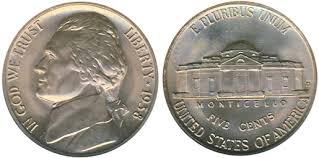

Welcome to NickelFacts.net
NickelFacts.net is the premier website for all facts about Nickel!
Hot Facts
- Greece has large nickel deposits!
- The atomic number of nickel is 28!
- There's a band called nickel back but they're not singing about nickel!
Media
These coins are made of nickel:
This is that cool band I was talking about earlier:
Contribute!
Please send new facts to nickelfacts.net@gmail.com or fork the nickel facts github and send a pull request!
Links
There are other websites about nickel, e.g. nickelinstitute.org, but this one is better.Some fun resources for kids: